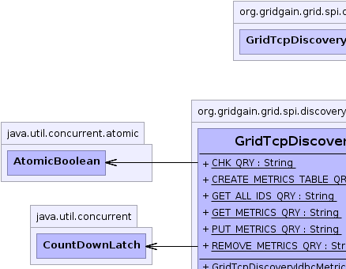
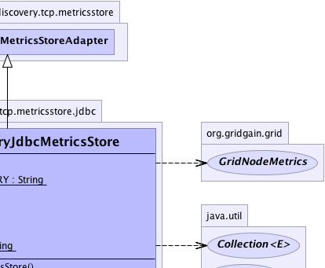
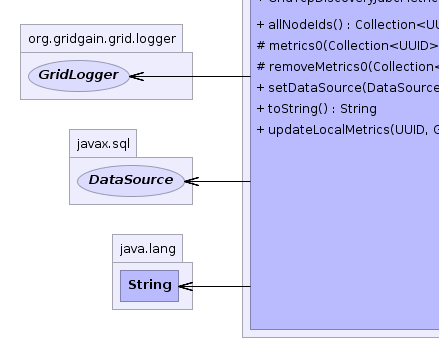
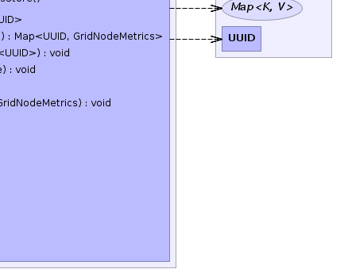

org.gridgain.grid.spi.discovery.tcp.metricsstore.GridTcpDiscoveryMetricsStoreAdapter
org.gridgain.grid.spi.discovery.tcp.metricsstore.jdbc.GridTcpDiscoveryJdbcMetricsStore
org.gridgain.grid.spi.discovery.tcp.metricsstore.GridTcpDiscoveryMetricsStoreAdapter
org.gridgain.grid.spi.discovery.tcp.metricsstore.jdbc.GridTcpDiscoveryJdbcMetricsStore
|
GridGain™ 4.0.0c
Community Edition |
|||||||||
| PREV CLASS NEXT CLASS | FRAMES NO FRAMES | |||||||||
| SUMMARY: NESTED | FIELD | CONSTR | METHOD | DETAIL: FIELD | CONSTR | METHOD | |||||||||
java.lang.Object
public class GridTcpDiscoveryJdbcMetricsStore
JDBC-based metrics store.
GridTcpDiscoveryJdbcMetricsStore.setDataSource(DataSource)).The database will contain 1 table to hold nodes metrics (tbl_metrics).
| Wiki | |
| Forum |
|  |  |
|  |  |
| Field Summary | |
|---|---|
static String |
CHK_QRY
Query to check database validity. |
static String |
CREATE_METRICS_TABLE_QRY
Query to create metrics table. |
static String |
GET_ALL_IDS_QRY
Query to get all node IDs. |
static String |
GET_METRICS_QRY
Query to get metrics. |
static String |
PUT_METRICS_QRY
Query to put metrics. |
static String |
REMOVE_METRICS_QRY
Query to remove metrics. |
| Fields inherited from class org.gridgain.grid.spi.discovery.tcp.metricsstore.GridTcpDiscoveryMetricsStoreAdapter |
|---|
DFLT_METRICS_EXPIRE_TIME |
| Constructor Summary | |
|---|---|
GridTcpDiscoveryJdbcMetricsStore()
|
|
| Method Summary | |
|---|---|
Collection<UUID> |
allNodeIds()
Gets all node IDs currently contained in the store. |
protected Map<UUID,GridNodeMetrics> |
metrics0(Collection<UUID> nodeIds)
Requests metrics from store in case local cached metrics are outdated. |
protected void |
removeMetrics0(Collection<UUID> nodeIds)
Removes metrics from store. |
void |
setDataSource(DataSource dataSrc)
Sets data source. |
String |
toString()
|
void |
updateLocalMetrics(UUID locNodeId,
GridNodeMetrics metrics)
Updates local node metrics in the store. |
| Methods inherited from class org.gridgain.grid.spi.discovery.tcp.metricsstore.GridTcpDiscoveryMetricsStoreAdapter |
|---|
getMetricsExpireTime, metrics, removeMetrics, setMetricsExpireTime |
| Methods inherited from class java.lang.Object |
|---|
clone, equals, finalize, getClass, hashCode, notify, notifyAll, wait, wait, wait |
| Field Detail |
|---|
public static final String GET_METRICS_QRY
public static final String REMOVE_METRICS_QRY
public static final String GET_ALL_IDS_QRY
public static final String PUT_METRICS_QRY
public static final String CREATE_METRICS_TABLE_QRY
public static final String CHK_QRY
| Constructor Detail |
|---|
public GridTcpDiscoveryJdbcMetricsStore()
| Method Detail |
|---|
protected Map<UUID,GridNodeMetrics> metrics0(Collection<UUID> nodeIds) throws GridSpiException
metrics0 in class GridTcpDiscoveryMetricsStoreAdapterGridSpiException - If any error occurs.nodeIds - Nodes to request metrics for.
protected void removeMetrics0(Collection<UUID> nodeIds) throws GridSpiException
removeMetrics0 in class GridTcpDiscoveryMetricsStoreAdapterGridSpiException - If any error occurs.nodeIds - Nodes to remove metrics of.
public void updateLocalMetrics(UUID locNodeId,
GridNodeMetrics metrics)
throws GridSpiException
GridSpiException - If an error occurs.locNodeId - Id of the local node (caller node).metrics - Local node metrics.public Collection<UUID> allNodeIds() throws GridSpiException
GridSpiException - if an error occurs.
@GridSpiConfiguration(optional=false) public void setDataSource(DataSource dataSrc)
Data source should be fully configured and ready-to-use.
dataSrc - Data source.public String toString()
toString in class Object
|
GridGain™ 4.0.0c
Community Edition |
|||||||||
| PREV CLASS NEXT CLASS | FRAMES NO FRAMES | |||||||||
| SUMMARY: NESTED | FIELD | CONSTR | METHOD | DETAIL: FIELD | CONSTR | METHOD | |||||||||
|
GridGain - Real Time Big Data
|
|

|
|